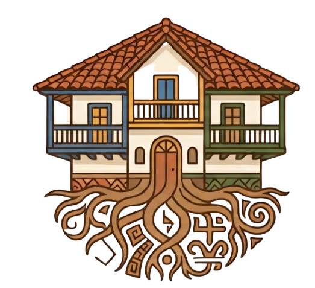
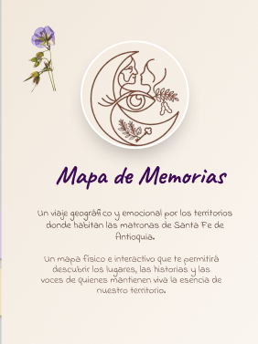
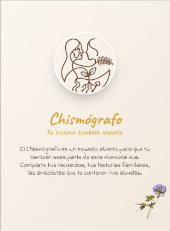

Investigar el contexto
Explorar referentes de museos, exposiciones interactivas y experiencias inclusivas.
02 / UX RESEARCH · INTERACTION DESIGN
Convertir la historia de Las Matronas de Santa Fe de Antioquia en una experiencia que se explora, se comparte y se recuerda.

PATRIMONIO · HISTORIAS · PERSONAS01 El reto
¿Cómo acercar el patrimonio cultural a las personas a través de la interacción?
El proyecto propone una forma participativa de descubrir las historias de Las Matronas. El reto era conectar el contenido histórico con la curiosidad de los visitantes y con experiencias que pudieran compartir.
La oportunidad estaba en combinar objetos físicos, historias y medios digitales, manteniendo el patrimonio como centro de la experiencia.
Coordiné el equipo y participé en investigación, definición de conceptos, flujos de interacción, prototipado y apoyo al desarrollo.
02 Investigación
Investigación secundaria, entrevistas, encuestas y síntesis mediante journey y agrupación de hallazgos.
Explorar referentes de museos, exposiciones interactivas y experiencias inclusivas.
Conocer percepciones sobre la historia, las interacciones y los espacios culturales.
Relacionar necesidades, puntos de fricción e ideas de interacción para definir los productos.
| Hallazgo sintetizado | Respuesta de diseño |
|---|---|
| Interés por descubrir historias mediante la interacción. | Experiencias basadas en exploración y participación activa. |
| Curiosidad al manipular objetos que revelan contenido. | Acciones físicas como punto de entrada a narrativas digitales. |
| Valor de las experiencias compartidas. | Mecánicas que promueven conversación y memoria colectiva. |
| Necesidad de interacciones fáciles de entender. | Flujos sencillos que mantienen la atención en la historia. |
03 El ecosistema
Cada experiencia propone una relación distinta con el patrimonio: descubrir, explorar y compartir.
PRODUCTO 01 / MAXILIBRO
Un libro de gran formato que combina interacción física, ilustraciones y contenido multimedia para transformar la lectura en una experiencia compartida.
Mi participación conectó los hallazgos de investigación con el concepto de interacción y el prototipado de la experiencia.
Lógica de la experiencia
Acercarse al libro y descubrir su contenido.
Una acción física da paso a la historia.
La narración abre una conversación entre visitantes.
Esquema explicativo del concepto de interacción.
PRODUCTO 02 / MAPA DE MEMORIAS
Un mapa interactivo que conecta ubicaciones y objetos de Las Matronas con historias de Santa Fe de Antioquia.
La navegación propone descubrir contenido a través de la exploración del territorio y de sus memorias.

PRODUCTO 03 / CHISMÓGRAFO
Inspirado en los chismógrafos tradicionales, invita a los visitantes a contar sus historias y relacionarlas con relatos de otras personas.
La interacción vincula recuerdos individuales con memoria colectiva y promueve la conversación.
Explorar el Chismógrafo ↗ (abre en otra pestaña)
04 Proceso y contribución
Transformar hallazgos en ideas de interacción y recorridos para cada experiencia.
Participar en la revisión de estructuras, navegación y comportamiento antes del desarrollo.
Colaborar en la identidad y en los componentes de las experiencias.
Apoyar el desarrollo, organizar tareas y mantener alineados los objetivos del equipo.
05 La experiencia
Un vistazo al ecosistema de Memoria Viva y a la experiencia construida.
06 Aprendizajes
Comprender a los visitantes permite dar una intención clara a cada interacción.
La coordinación y el diálogo entre disciplinas conectan las ideas con su ejecución.
La siguiente evaluación debe observar comprensión, participación y recorrido en cada experiencia.